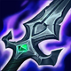
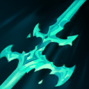
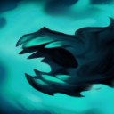
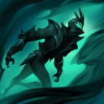

起手裝備
 長劍
長劍
殞落→三相→死亡之舞保留為熟練者的長線普攻方案；預設鞋改鍍板→裝甲，降低面對常見物理突進的脆弱點。若主要威脅為魔傷／可縮短控制，整條改水星→鎖鏈；不是要求每局固定物防鞋。



五件成裝與鞋子分開列示；起手與核心是購買路線，不是額外佔用的成裝欄位。鞋子完成時機仍依對線壓力與回城金錢調整。


征服者、兇蠻、背水一戰、敏捷與骨甲保留，著重技能後普攻與短換血承傷，不以打野暴擊配置強行取代。


維爾戈：閃現調整進退，點燃補短換血收尾與重創；沒有擊殺窗口時不要為點燃強行離開兵線。
加點優先：Q > E > W
維持 Q>E>W；技能後必須穿插普攻才有標記雙擊與治療。黑霧提供轉位空間但不是無條件隱身安全區；奪體前先看敵方控制與靈魂位置。
參與擊殺後可奪取敵方英雄身體，獲得其基礎技能與裝備並免費重施自己的大絕。
有後續版本調整的項目以較新數值為準；未列出者不代表完整技能成長表。

被動讓普攻造成當前生命百分比傷害並攻擊標記；主動向前刺擊。
有後續版本調整的項目以較新數值為準；未列出者不代表完整技能成長表。
有後續版本調整的項目以較新數值為準；未列出者不代表完整技能成長表。

蓄力後向前突進並釋放霧魂，蓄力越久暈眩時間越長。

沿牆散播黑霧，在霧中獲得偽裝、跑速與攻速，強化追擊與繞後。
有後續版本調整的項目以較新數值為準；未列出者不代表完整技能成長表。
傳送到目標區域斬擊低生命敵人並擊退其他目標，適合收割與重置。
有後續版本調整的項目以較新數值為準；未列出者不代表完整技能成長表。
附身是取得新技能與治療的窗口，已去掉「附身無敵」的絕對保護敘述，不能用它保證免除持續傷害。
蓄力2技 → 普攻 → 1技 → 雙重普攻
二技蓄力暈眩後普攻，接一技標記並再次普攻觸發雙重打擊與治療。
3技 → 2技 → 普攻 → 1技 → 4技
沿牆展開黑霧取得攻速與跑速，暈眩接近後打出被動，最後用大絕收割。
4技斬殺 → 被動附身 → 離開附身
參與擊殺後評估靈魂位置與剩餘控制，再附身取得治療和基礎技能；不要把附身當作保證免除持續傷害的無敵，使用完關鍵技能再以大絕離開。
先用一技與普攻打短換血，黑霧留作拉開或改變進場角度；二技空掉後不要持續追。預設鍍板鞋處理物理普攻壓力，魔傷／控制較多時改水星鞋線。
殞落王者之劍→三相之力→死亡之舞為條件式單線方案，靠技能後普攻維持輸出；先等待隊友創造第一個擊殺，不把自己當開戰主坦。鞋子依主要威脅升級，不固定追求攻速。
後期每次奪體都要快速判斷技能用途，拿完關鍵技能就退出再找下一個靈魂。
賈克斯反擊和雷尼克頓點控會阻止第一個擊殺，等隊友控制後再進場收割。
對局名單是機制與分路判斷，不代表固定勝率；需同時看雙方熟練度、兵線與陣容。
保留原巴龍路 B，Tier 單項仍待確認：當版可核對指南與公開評級集中打野，未找到足以判斷單線強度的同路資料。Q接普攻有續航不等於能穩定打贏專職鬥士，不能把打野高評級移植。
殞落→三相→死亡之舞保留為熟練者的長線普攻方案；預設鞋改鍍板→裝甲，降低面對常見物理突進的脆弱點。若主要威脅為魔傷／可縮短控制，整條改水星→鎖鏈；不是要求每局固定物防鞋。
對局名單是技能與換血條件的提示，不是7.3b勝率排名。先看敵方突進、關鍵防禦技能與兵線；裝備成形後重新評估，不能把前期有利當整場必勝。
以下情境替換以本頁7.3b五件成裝為基準。同一格多項建議擇一；鞋子由二級升三級，主動裝另占成裝格。
高
觸發：能持續命中有護盾目標時補破盾，護盾少不必固定買。
守護天使 → 巨蛇鋒牙
面對敵方護盾多時，將守護天使換成巨蛇鋒牙；先保留前三件核心，若替換核心位須確認目前死亡或輸出不足的原因。
面對敵方護盾多時，將守護天使換成巨蛇鋒牙；先保留前三件核心，若替換核心位須確認目前死亡或輸出不足的原因。
主動裝占成裝格；鞋子更換時整條升級路線一起更換。
高
觸發：先重創小件過渡，需要穩定維持時才替換完整成裝。
守護天使 → 生化龐克鏈鋸之劍
面對敵方回復多時，將守護天使換成生化龐克鏈鋸之劍；先保留前三件核心，若替換核心位須確認目前死亡或輸出不足的原因。
面對敵方回復多時，將守護天使換成生化龐克鏈鋸之劍；先保留前三件核心，若替換核心位須確認目前死亡或輸出不足的原因。
主動裝占成裝格；鞋子更換時整條升級路線一起更換。
高
觸發：保住進場容錯，但復活仍需要隊友掩護。
目前配置已提供部分被物理爆發所需功能；先按威脅調整購買順序，不為分類名稱強行多買一件。
主動裝占成裝格；鞋子更換時整條升級路線一起更換。
高
觸發：依主要魔法威脅調整，已有命脈裝時不再疊另一件命脈。
守護天使 → 自然之力
面對魔法威脅時，將守護天使換成自然之力；先保留前三件核心，若替換核心位須確認目前死亡或輸出不足的原因。
面對魔法威脅時，將守護天使換成自然之力；先保留前三件核心，若替換核心位須確認目前死亡或輸出不足的原因。
主動裝占成裝格；鞋子更換時整條升級路線一起更換。
高
觸發：二級鞋改水星之靴，三級鞋對應鎖鏈軍靴；韌性不縮短擊飛。
鍍板鋼蓋 → 水星之靴
魔法傷害及可縮短的控制占主導時，整條改水星之靴→鎖鏈軍靴；韌性不能縮短擊飛。
魔法傷害及可縮短的控制占主導時，整條改水星之靴→鎖鏈軍靴；韌性不能縮短擊飛。
主動裝占成裝格；鞋子更換時整條升級路線一起更換。
7.3c差異核對：7.3c直接平衡項目屬符文大亂鬥；本頁保留已核對的峽谷配置。版本更新不等於每位英雄都必須更換Tier或裝備。查看整輪校正範圍。
本頁校正版本：7.3c；校正日期：2026-10-25。
參考來源標示版本：7.3c
本輪核對官方版本差異、道具/符文引用、五成裝與鞋線、逐級加點及情境替換一致性。Tier及玩法屬本站編輯判斷，不是官方排名或台服勝率；未公開的全級技能表不推算。
評級理由：保留原巴龍路 B，Tier 單項仍待確認：當版可核對指南與公開評級集中打野，未找到足以判斷單線強度的同路資料。Q接普攻有續航不等於能穩定打贏專職鬥士，不能把打野高評級移植。
Riot 官方資料 ↗ · Riot 官方資料 ↗ · Riot 官方資料 ↗ · Riot 官方資料 ↗ · WildRiftFire 參考攻略 ↗ · WildRiftFire 參考攻略 ↗ · Riot 官方資料 ↗
保留原巴龍路 B，Tier 單項仍待確認：當版可核對指南與公開評級集中打野，未找到足以判斷單線強度的同路資料。Q接普攻有續航不等於能穩定打贏專職鬥士，不能把打野高評級移植。
7.3c 的直接英雄倍率改動屬符文大亂鬥；本召喚峽谷配置承接 7.3b。未把模式專屬增削轉為峽谷增削。
五件成裝、獨立鞋線、起手、核心、情境替換引用與一般符文列別均重新檢查；移除裝備不列入當前推薦。
歷史資料有後續調整時，以較新版本數值為準。
| 項目 | 調整前 | 調整後 |
|---|---|---|
| 被動傷害 | 2%/3%/4%/5% | 3%/4%/5%/6% |
| 暴擊傷害係數 | 80% | 85% |
| 項目 | 調整前 | 調整後 |
|---|---|---|
| 暴擊數值係數 | 50% | 70% |
歷史資料有後續調整時，以較新版本數值為準。
| 項目 | 調整前 | 調整後 |
|---|---|---|
| 基礎物攻 | 62 | 60 |
| 物攻成長 | 4.5 | 4.2 |
| 項目 | 調整前 | 調整後 |
|---|---|---|
| 基礎治療量 | 7% | 5% |
| 項目 | 調整前 | 調整後 |
|---|---|---|
| 目前生命傷害暴擊傷害係數 | 目前暴擊傷害 | 目前暴擊傷害 × 80% |
| 第二擊暴擊傷害係數 | 目前暴擊傷害 | 目前暴擊傷害 × 80% |
| 突刺傷害 | 20 / 40 / 60 / 80（+ 80%物攻）×（1 + 50% × 暴擊率） | 25 / 45 / 65 / 85（+ 70%物攻）×（1 + 60% × 暴擊率 +（暴擊傷害 - 2）× 暴擊率 × 60%） |
| 項目 | 調整前 | 調整後 |
|---|---|---|
| 攻速 | 45 / 50 / 55 / 60% | 35 / 40 / 45 / 50% |
| 項目 | 調整前 | 調整後 |
|---|---|---|
| 傷害 | 110%物攻 - 165%物攻（取決於暴擊率）+ 目標已損失生命 ×（14 / 17 / 20 + 6%額外物攻）% | 120%物攻 × (1 + 50% × 暴擊率 +（暴擊傷害 - 2）× 暴擊率 * 50%）+ 目標已損失生命 ×（14 / 17 / 20 + 5%額外物攻）% |
| 項目 | 調整前 | 調整後 |
|---|---|---|
| 基礎生命 | 660 | 630 |
| 每級生命成長 | 128 | 138 |